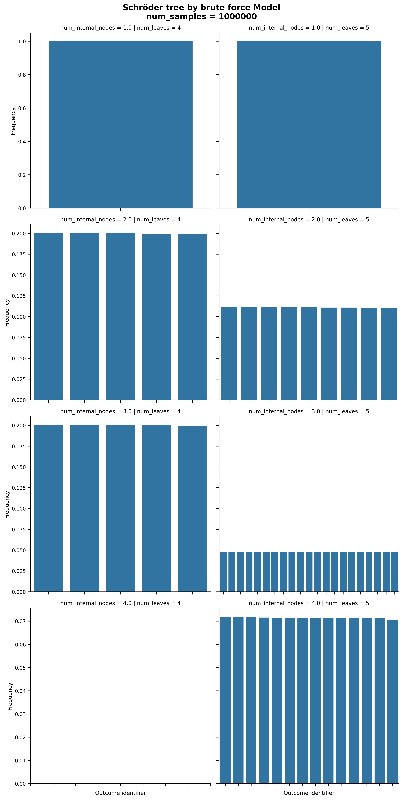

Tree#
- all_schroeder_tree(num_leaves: int, num_internal_nodes: int | None = None) list[Node][source]#
Reruns all Schröder trees with given numbers of leaves and internal nodes.
- Parameters:
num_leaves (int) – Number of leaves
num_internal_nodes (int) – Number of internal nodes
- Returns:
List of the tree roots
- Return type:
list[Node]
- caterpillar_tree(num_leaves: int, seed: int | None = None) Node[source]#
Generates a caterpillar tree. In the special case of
num_leaves == 1then we output a single node even if it is strictly speaking not a caterpillar tree.- Returns:
The root of the tree
- Return type:
Node
- schroeder_tree(num_leaves: int, num_internal_nodes: int | None = None, seed: int = None) Node[source]#
Generates a random Schöder tree with suitable number of leaves and internal nodes. The algorithm was presented by Alonso, Rémy, Schott (1997a) building on Alonso, Rémy, Schott (1997b).
If the number of internal node is not give, it is selected at random such that each number of internal nodes is sampled with probability proportional to the number of Schroöder trees with the corresponding number of internal nodes.
- Parameters:
num_leaves (int) – The number of leaves of the tree
num_internal_nodes (int | None) – The number of internal nodes of the tree
seed (int, default:
None) – Seed for numpy random number generator
- Returns:
The root of the tree
- Return type:
Node
Validation
This sampler is supposed to yield a uniform distribution, but does not in practice.

References
Uniform generation of a Schröder tree, L. Alonso, J.L. Rémy and R. Schott, Information Processing Letters, Volume 64, Issue 6, 1997.
A linear-time algorithm for the generation of trees, L. Alonso, J.L. Rémy and R. Schott, Algorithmica 17, 162–182, 1997
- schroeder_tree_brute_force(num_leaves: int, num_internal_nodes: int | None = None, seed: int = None) Node[source]#
Sample a Schröder tree uniformly at random by enumerating all possible Schröder tree and selecting one of them uniformly at random. This procedure is particularly inefficient but ensures uniformity.
- Parameters:
num_leaves (int) – The number of leaves of the tree
num_internal_nodes (int | None) – The number of internal nodes of the tree
seed (int, default:
None) – Seed for numpy random number generator
- Returns:
The root of the tree
- Return type:
Node
Validation
This sampler yields a uniform probability distribution but enumerates all trees (and is thus slow).

{kind=link}
- schroeder_tree_lescanne(num_leaves: int, num_internal_nodes: int | None = None, seed: int = None) Node[source]#
Samples a random Schröder tree following the algorithm provided by Lescanne (2022). The sampler is directly taken from the corresponding GitHub repository (no licence available).
If a specific number of internal nodes is given, trees are sampled at random until the required number of internal nodes is achieved (rejection sampling).
- Parameters:
num_leaves (int) – The number of leaves of the tree
num_internal_nodes (int | None) – The number of internal nodes of the tree
seed (int, default:
None) – Seed for numpy random number generator
- Returns:
The root of the tree
- Return type:
Node
Validation
This sampler has unknown probability distribution but is efficient for large numbers of leaves.

References
Holonomic equations and efficient random generation of binary trees, Pierre Lesscanne, Discrete Mathematics & Theoretical Computer Science, vol. 25:2, 2024.